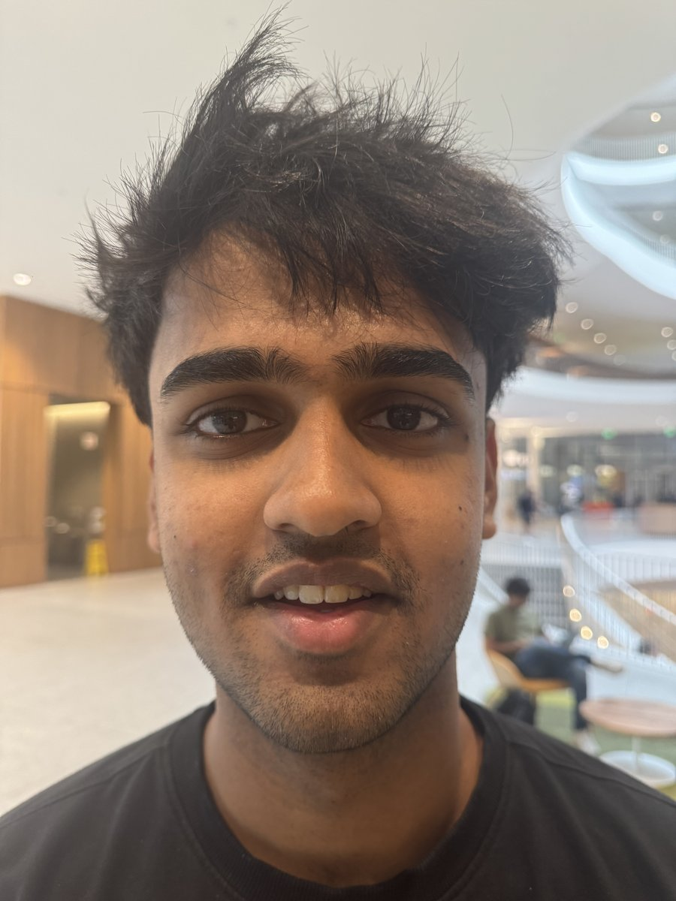
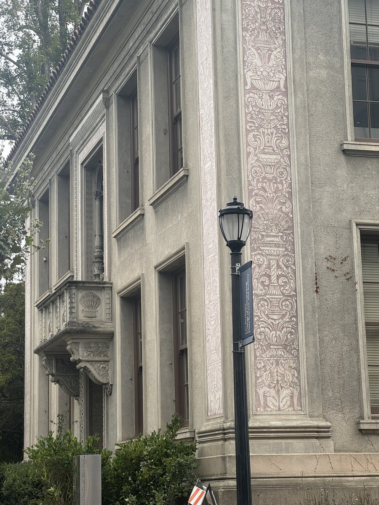
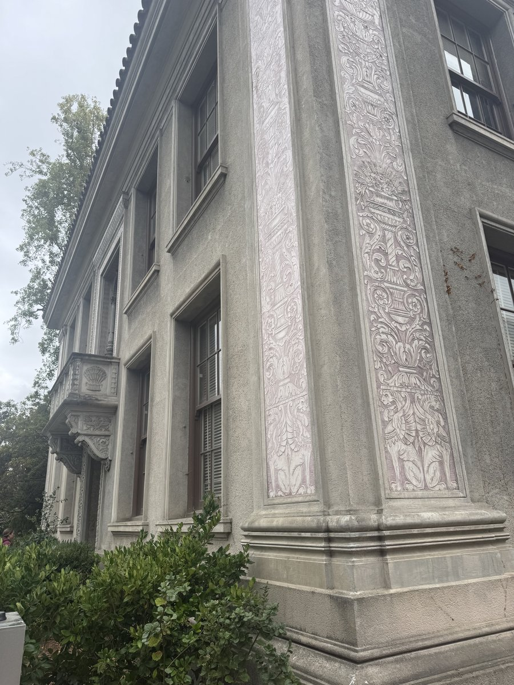
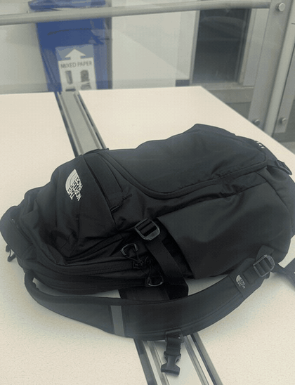

The close photo looks worse because the camera is much nearer to the nose than to the ears and sides of the face, so nearby features get magnified. Stepping back and zooming keeps the face about the same size in the frame, but the facial features are now at more similar distances from the camera, so the proportions look more natural. Zoom changes how much of the scene fits in the frame; camera position is what changes perspective.


The zoomed shot looks flatter because the camera is farther from the building, so differences in depth are a smaller fraction of the total distance and the facade looks compressed. Walking closer (without zoom) moves the center of projection: the near corner becomes much larger relative to the far side, so the building recedes more strongly. Same idea as Part 1, just in reverse.

I took stills of a backpack while stepping back and zooming in so the bag stayed about the same size. Because only the camera position changes perspective, the bag stays put while the background stretches and compresses — the Vertigo / dolly-zoom effect.